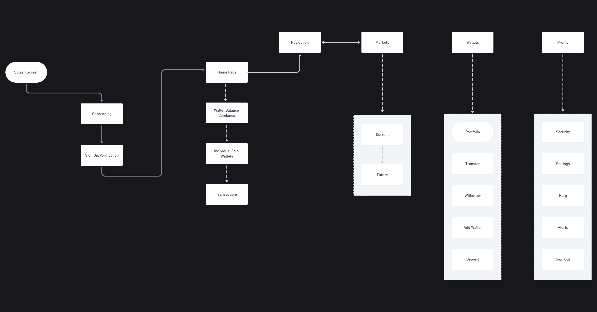
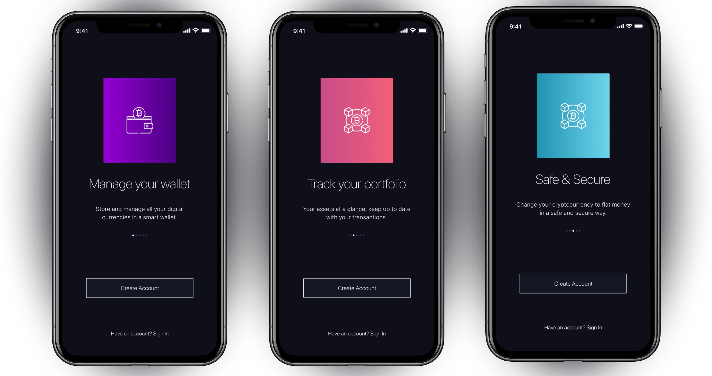
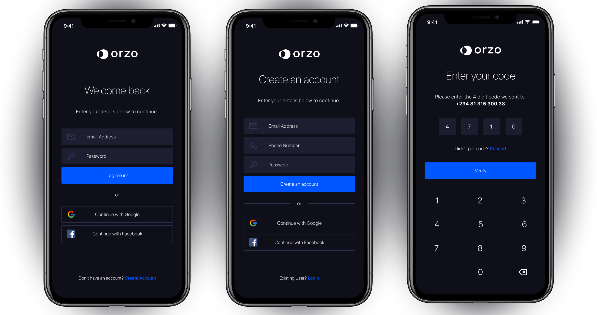

- Product Designer
- UX Researcher
- User Interface Designs
- Style guide & UI Components
- Interactive Prototypes

A simple research on a number of crypto wallet apps revealed that many of the apps were quite unintuitive
and difficult to use. It was also evident that most of these apps were targeted towards people who already
understand crypto. This invariably presents a problem of designing an app that is inclusive and addresses
important questions such as “how easy is the user able to complete an end to end transaction with the least
possible steps?”, “are key product features easy to find”? “Compared to other competitors are users able to
understand what the app does at first glance?” It was also important to
streamline the intricate process of
crypto users exchanging one coin to another to get a better return on their investments. Orzo aims to
address these challenges by simplifying key touchpoints such as onboarding, transaction flows and wallet
management. With the wide adoption of cryptocurrency and the potential to change the economy and social
system, simplifying cryptocurrency as an investment tool and payment method in a bid to align with the
decentralized principle means whatever the outcome is, an elegant and modern design solution that is
simple,
yet powerful is expected. This case study seeks to document how I used
design thinking to arrive at a viable
design solution that makes trading decisions and long-term app engagements as delightful as
possible.
The design sprint commenced with general competitor research and drafting of proto-personas to help me
better formulate my understandings. Subsequently I was then able to generate hypothesis and conducted the
interviews which enabled me to identify several key findings. With my interviews I sought to understand user
habits regarding using mobile phones to handle financial transactions, what kind of security concerns they
had regarding their financial institutions and apps that they use, what were their thoughts on the use and
viability of cryptocurrency? Each interview questions drilled into specific
behaviors and concerns. Asides
user interviews I also gained more insight into crypto wallet apps by reading reviews, on Google Play
and
iTunes. This was a great way to learn what problems people had with existing products. I had two target
users for my research; a. Wallet Users: These were users who user crypto apps predominantly for wallet
activities, and b. Crypto Traders: These were users that use crpto apps for trading and investment.
During
the course of the interviews, I spent a bit time asking for their background and establishing what their
mental model was as well as their expectations. I asked questions such as; what they do with crypto,
what
past experiences they've had, how they learnt about crypto, why they are consistent with using it, how
they
think existing products could be better and what are the potentials they think could be explored. I
interviewed 3 women and 4 men, with ages ranging from 18 to 50. Below are highlight of questions from
the
interviews:
- Uses a MacBook at work everyday
- Invests in stocks and other investment instruments through apps
on a regular basis.
- Uses online banking app to pay for everyday expenses.
- Frequently splurges money on high-tech gadgets
- Has just started his journey into crypto, wants to understand
crypto and trade better.
- Wants to increase his savings to have a better living in the
future by investing.
Affinity map of the 4 main pain points on digital currency that users face
Business Goals: Focus on the pain points such as simplicity, lowering entry barrier and security.
- Simplicity and convenience is very important to users.
- Financial conservation is popular with most people, especially when there’s
unfamiliarity outside of their comfort zones (including uncertainty on currency valuation).
- There is discomfort with the concept of finance and technology because of a
lack of education. There’s even more discomfort adopting new technology due to security
concerns.
-
There is a high barrier of entry into the cryptocurrency due to the point above with little to
no incentive to promote adoption rate.
At this point I understood what the problem was and what major pain points were. It was now time to come up
with creative ideas to solve the problem. I like to call my design process a tripartite one - low
fidelity/wireframing, high fidelity and prototyping which is exactly how I designed for this project. During
research phase, I learnt that most users preferred to have a multiwallet/portfolio feature so as to keep
track of their earnings and assets, similar to how bank apps work, I decided to incorporate this into the
design. Also for crypto traders, having a built-in exchange feature with
intergrated charts, graph and other
trading options will make for a seamless experience, so I decided to explore this idea. My planned
differentiator was a simple, usable wallet with a robust trading option. Remember the feedback I got
from
research: simplicity and security? I wanted to make this app approachable enough for new users - the
uninitiated so I got inspiration from other wallets, banking apps, pattern libraries and design
inspiration
collections to ensure the design was modern and followed current design patterns. The final piece was
putting together all the findings and feedback I had gathered from initial phases. I had set a direction
for
the design by establishing information archictecture and general user flow, it was time to do the cool
stuff
- create high fidelity designs that can be presented to business owners as well as mirror what the app
would
look like in production.

Application workflow and information architecture
Wireframe sketch for some important screens
Based on my findings during the research phase, I learnt how important it was for users to immediately
understand what the app does as soon as they launch the app for the first time. What better way to do this
than to explicitly walk new users through a summary of what the app does during the onboarding process. The
use of bold gradients is in line with brand requirements - to have a compelling powerful feel to show users
the brand stands out of competition.

The login and signup screens were designed to be as simple and seamless as possible, with the addition of
social media login to incentivize users to either create an account or login easily. Because security is of
immense importance for apps like this, 2FA (two-factor authentication) has been added as an extra layer of
security to protect users.

The app home screen is designerd to be majorly a wallet portfolio where users can view two important
information - 1. View wallets and combined balance and 2. Have an overview of recent transactions. The flow
for the home page was designed this way to prevent overloading the user with too much information (my
knowledge of Human Computer Interaction and Hick’s law sure came in handy while deciding what works and
not).